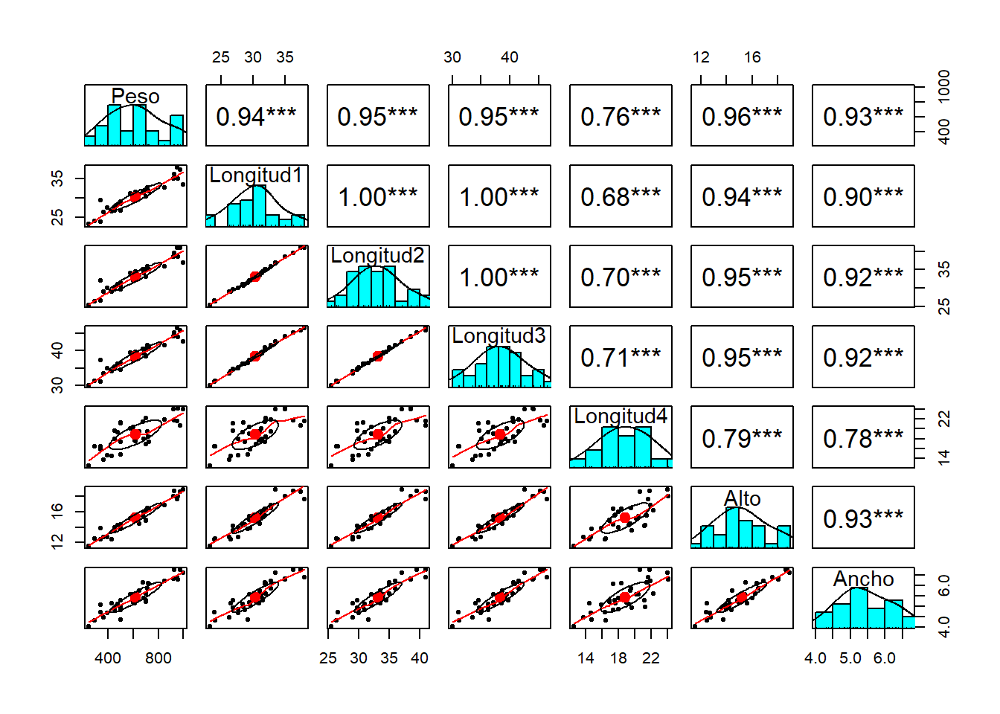
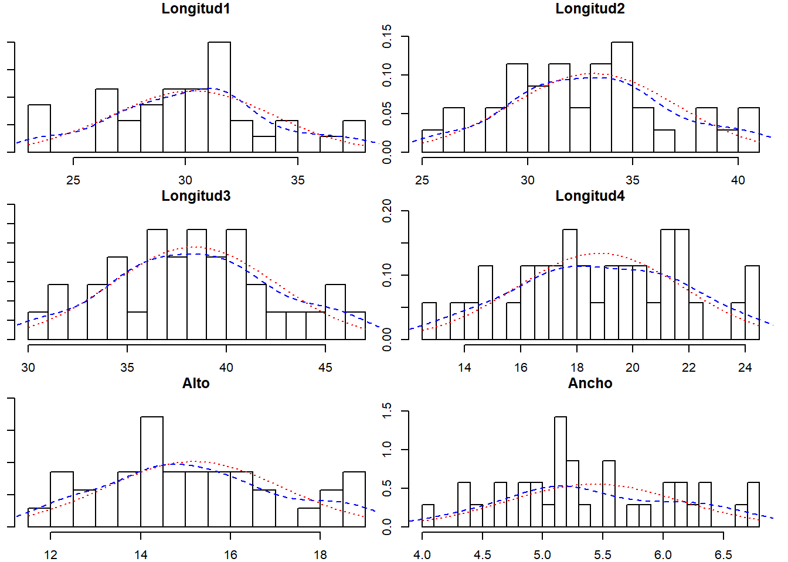
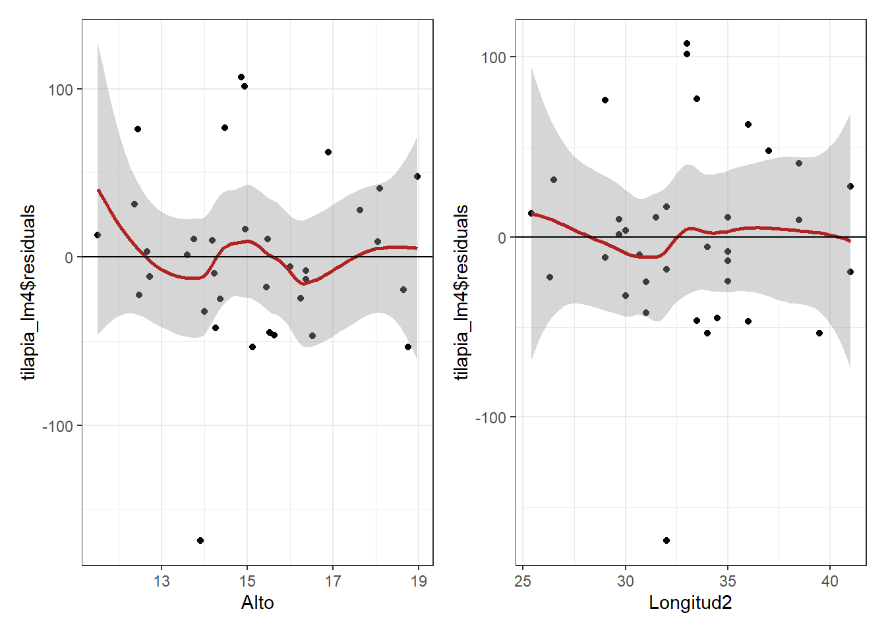
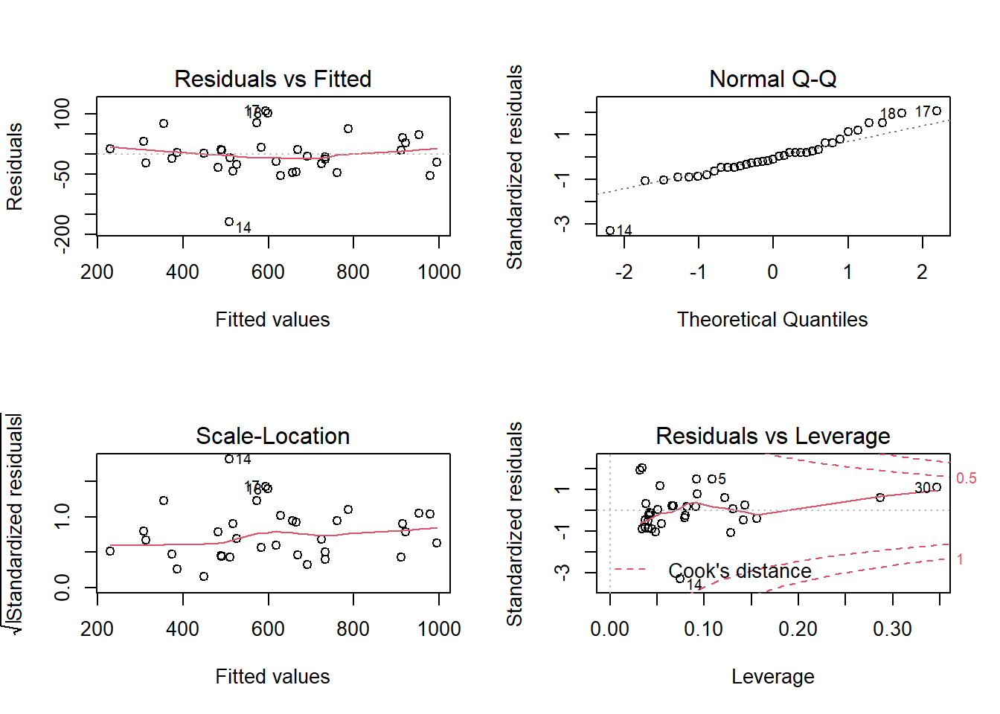

Regresión lineal multiple
Miguel Tripp
2021-07-07
Last updated: 2021-08-01
Checks: 7 0
Knit directory: 2021/
This reproducible R Markdown analysis was created with workflowr (version 1.6.2). The Checks tab describes the reproducibility checks that were applied when the results were created. The Past versions tab lists the development history.
Great! Since the R Markdown file has been committed to the Git repository, you know the exact version of the code that produced these results.
Great job! The global environment was empty. Objects defined in the global environment can affect the analysis in your R Markdown file in unknown ways. For reproduciblity it’s best to always run the code in an empty environment.
The command set.seed(20210412) was run prior to running the code in the R Markdown file. Setting a seed ensures that any results that rely on randomness, e.g. subsampling or permutations, are reproducible.
Great job! Recording the operating system, R version, and package versions is critical for reproducibility.
Nice! There were no cached chunks for this analysis, so you can be confident that you successfully produced the results during this run.
Great job! Using relative paths to the files within your workflowr project makes it easier to run your code on other machines.
Great! You are using Git for version control. Tracking code development and connecting the code version to the results is critical for reproducibility.
The results in this page were generated with repository version 7628720. See the Past versions tab to see a history of the changes made to the R Markdown and HTML files.
Note that you need to be careful to ensure that all relevant files for the analysis have been committed to Git prior to generating the results (you can use wflow_publish or wflow_git_commit). workflowr only checks the R Markdown file, but you know if there are other scripts or data files that it depends on. Below is the status of the Git repository when the results were generated:
Ignored files:
Ignored: .Rhistory
Ignored: .Rproj.user/
Ignored: analysis/hero-image.html
Ignored: analysis/poke_logo.png
Untracked files:
Untracked: Curso_Bioestadistica_MTripp_cuatriII.docx
Untracked: Curso_Bioestadistica_MTripp_cuatriII.pdf
Untracked: Diapositivas/
Untracked: Prueba_markdown.Rmd
Untracked: Prueba_markdown.pdf
Untracked: README.html
Untracked: Resources/
Untracked: Tarea_Tstudent.Rmd
Untracked: Tarea_Tstudent.docx
Untracked: Tarea_Tstudent.html
Untracked: Tarea_Tstudent.pdf
Untracked: analysis/Clase13_noParam.Rmd
Untracked: analysis/hero_backgroud.jpg
Untracked: analysis/images/
Untracked: analysis/style.css
Untracked: analysis/test.Rmd
Untracked: code/tarea_macrograd.R
Untracked: data/CS_subset.csv
Untracked: data/Consumo_oxigeno_wide.csv
Untracked: data/Darwin_esp.csv
Untracked: data/Data_enzimas_Experimento1.txt
Untracked: data/Data_enzimas_Experimento2.txt
Untracked: data/Data_enzimas_Experimento3.txt
Untracked: data/Data_enzimas_Experimento4.txt
Untracked: data/DownloadFestival(No Outlier).dat
Untracked: data/Festival.csv
Untracked: data/Hful_metabolitos_ver2.csv
Untracked: data/Longitud_noParam.csv
Untracked: data/LungCapData.txt
Untracked: data/LungCapDataEsp.csv
Untracked: data/PalmerPenguins.csv
Untracked: data/Pokemon_tabla.csv
Untracked: data/Pokemon_tabla.xls
Untracked: data/RExam.dat
Untracked: data/Rexamendat.csv
Untracked: data/Tabla1_Muestreo.txt
Untracked: data/Transcriptome_Anotacion.csv
Untracked: data/Transcriptome_DGE.csv
Untracked: data/Vinogradov_2004_Titanic.tab
Untracked: data/Vinogradov_2004_Titanic.tab.csv
Untracked: data/data_tukey.txt
Untracked: data/exp_macrogard_growth.tab
Untracked: data/exp_macrogard_rna-dna.tab
Untracked: data/fertilizantes_luz.csv
Untracked: data/gatos_sueno.csv
Untracked: data/macrogard_crecimiento.csv
Untracked: data/pokemon_extended.csv
Untracked: output/Plot_all_penguins.pdf
Untracked: output/Plot_all_penguins.tiff
Untracked: output/graficos/
Unstaged changes:
Modified: analysis/_site.yml
Note that any generated files, e.g. HTML, png, CSS, etc., are not included in this status report because it is ok for generated content to have uncommitted changes.
These are the previous versions of the repository in which changes were made to the R Markdown (analysis/Clase12_regresionMulti.Rmd) and HTML (docs/Clase12_regresionMulti.html) files. If you’ve configured a remote Git repository (see ?wflow_git_remote), click on the hyperlinks in the table below to view the files as they were in that past version.
| File | Version | Author | Date | Message |
|---|---|---|---|---|
| html | 5aafed2 | Miguel Tripp | 2021-08-01 | Build site. |
| html | 2bc601a | Miguel Tripp | 2021-07-31 | Build site. |
| Rmd | b4e67dc | Miguel Tripp | 2021-07-31 | workflowr::wflow_publish(c(“analysis/index.Rmd”, “analysis/about.Rmd”, |
| html | 03db7ff | Miguel Tripp | 2021-07-25 | Build site. |
| html | fcb9047 | Miguel Tripp | 2021-07-25 | Build site. |
| html | 2adc7a9 | Miguel Tripp | 2021-07-24 | Build site. |
| html | 9d09420 | Miguel Tripp | 2021-07-22 | Build site. |
| html | 0f7eb2d | Miguel Tripp | 2021-07-12 | Build site. |
| Rmd | 9e1edce | Miguel Tripp | 2021-07-12 | Publish the initial files for myproject |
1 Generalidades
La regresión lineal simple asume que hay una sola variable predictora en la que estamos interesados. Sin embargo existen muchas situaciones en la que queremos predicir un valor a partir de multiples variables predictora, por lo que necesitamos de una extensión de la reresión lineal.
La regresión lineal múltiple permite generar un modelo lineal en el que el valor de la variable dependiente o respuesta (\(Y\)) se determina a partir de un conjunto de variables independientes llamadas predictores (\(X_1\), \(X_2\), \(X_3\)…).
Conceptualmente, los modelos lineales multiples son muy sencillos. Todo lo que necesitamos hacer es añadir mas terminos a nuestra ecuación de regresión, de manera que pasamos de una ecuación simple como esta:
\(Y=\beta_0 + \beta_1 X_i + \epsilon\)
a esta:
\(Y=\beta_0 + \beta_1 X_{1i} + \beta_2 X_{2i} + ... + \beta_n X_{ni} + \epsilon\)
Al igual que en nuestro modelo lineal sencillo, \(\epsilon_i\) corresponde a los residuales asociados a la \(i_{esima}\) observación (\(\epsilon_i = Y_i - \hat{Y}_i\)). Pero en este modelo ahora tenemos tres coeficientes que tienen que ser estimados: el intercepto (\(b_0\)), la pendiente para la variable i (\(b_1\)) y la pendiente para la vairable 2 (\(b_2\)).
A pesar de que ahora tenemos mas coeficientes que necesitan ser estimados, la idea básica de la estimación sigue siendo la misma: los coeficientes estimados son aquellos que minimizan la suma de cuadrado de los residuales.
2 Ejemplo sencillo: Gatos y horas de sueño

En nuestro tema anterior, construimos un modelo lineal simple para predecir los niveles de irritabildiad en función de las horas de sueño, y otro modelo diferente para predecir la irritabilidad en función de las horas de sueño del gato.
Sin embargo, ambas variables van a afectar la irritabilidad por lo que tiene sentido generar un modelo de regresión múltiple que considere ambas variable.
#abrimos los datos
library(tidyverse)
gatos_url <- "https://raw.githubusercontent.com/trippv/Miguel_Tripp/master/gatos_sueno.csv"
gatos <- read_csv(gatos_url)En R, para generar un modelo multiple simplemente agregamos mas predictores en nuestra formula de la siguiente manera
Regresion.multi <- lm(irritabilidad ~ horas_sueno + sueno_gatos, data = gatos)Al igual que en el tema anterior, podemos visualizar los coeficientes estimados por R
print(Regresion.multi)
Call:
lm(formula = irritabilidad ~ horas_sueno + sueno_gatos, data = gatos)
Coefficients:
(Intercept) horas_sueno sueno_gatos
125.96557 -8.95025 0.01052 De esta manera, nuestra formula de regresión quedaria de la siguiente forma:
\(Y=\beta_0 + \beta_1 horas~de~sueno + \beta_2 sueno~ gato + \epsilon\)
De acuerdo a los resultados, el coeficiente asociado a las horas de sueño horas_suenoes bastante alto, lo que indica que cada hora de sueño que pierda que hace mas irritable mientras que el coeficiente del gatos sueno_gato es muy pequeño, sugiriendo que no tiene mucho efecto en mi irritabilidad.
Utilizando summary() podemos acceder a las pruebas de significancia del modelo.
summary(Regresion.multi)
Call:
lm(formula = irritabilidad ~ horas_sueno + sueno_gatos, data = gatos)
Residuals:
Min 1Q Median 3Q Max
-11.0345 -2.2198 -0.4016 2.6775 11.7496
Coefficients:
Estimate Std. Error t value Pr(>|t|)
(Intercept) 125.96557 3.04095 41.423 <2e-16 ***
horas_sueno -8.95025 0.55346 -16.172 <2e-16 ***
sueno_gatos 0.01052 0.27106 0.039 0.969
---
Signif. codes: 0 '***' 0.001 '**' 0.01 '*' 0.05 '.' 0.1 ' ' 1
Residual standard error: 4.354 on 97 degrees of freedom
Multiple R-squared: 0.8161, Adjusted R-squared: 0.8123
F-statistic: 215.2 on 2 and 97 DF, p-value: < 2.2e-16En la tabla, cada fila corresponde a cada uno de los coeficientes estimados y se realiza una prueba T de Student para evlauar si son diferentes de 0.
Finalmente, los resultados nos muestra que el modelo se desempeña mehor que lo esperado solamente por efecto del azar (\(F(2,97) = 215.2, P < 0.001\)) y el coeficiente de determinación \(R^2 = 0.812\) nos indica que el modelo de regresión nos explica el 81.2% de la variabilidad.
Sin embargo, algo interesante es que el coeficiente sueno_gatos no es significativo, lo que nos sugiere que posiblemente este modelo no sea el mas eficiente para predecir nuestra irritabildiad y que podriamos eliminar este predictor.
3 Ejemplo complicado: Predecir el peso de un pez

Estos datos estan tomados y modificados del set de datos Fish Market disponible en kaggle. Para este ejercicio, solo utilizaremos los datos de tilapia
peces_url <- "https://raw.githubusercontent.com/trippv/Miguel_Tripp/master/peces_regresion.csv"
peces <- read_csv(peces_url)
-- Column specification --------------------------------------------------------
cols(
Especie = col_character(),
Peso = col_double(),
Longitud1 = col_double(),
Longitud2 = col_double(),
Longitud3 = col_double(),
Longitud4 = col_double(),
Alto = col_double(),
Ancho = col_double()
)tilapia <- peces[peces$Especie == "Tilapia", - 1]El primer paso para establecer un modelo lineal múltiple es estudiar la relación que existe entre variables. Esta relación en critica a la hora de identificar los mejores predictores para el modelo (p. ej, que variables presentan relación de tipo no lineal) y para identificar colinialidad entre predictores.
Podemos usar la funcion pairs.panel() del paquete psych para visualziar los diagramas de disperción entre todas las variables asi como su valor de correlación.
psych::pairs.panels(tilapia, stars = TRUE)
El paquete Psych tambien contien la función multi.hist()la cual nos ayuda a evaluar la distribución de los datos:
psych::multi.hist(x = tilapia[,-1], dcol = c("blue", "red"))
Donde la linea roja corresponde a la distribución normal ajustada y la linea azul a la densidad observada.
Del análisis preliminar se pueden extraer las siguientes conclusiones:
- Las variables que tienen mayor relación lineal con el peso son: ancho (r = 0.96), longitud3 y longitud2 (r = 0.95).
- Las longitudes 1,2 y 3 estan altamente correlacionadas entre ellas, por lo que posiblemente no sea útil introducir ambos predictores en el modelo.
3.1 Generar el modelo multiple
Al igual que en nuestro ejemplo mas simple, el modelo múltiple se genera añadiendo cada uno de los predictores a la ecuación de regresión utilizando el simbolo +.
De manera que podemos pasar de un modelo simple usando un solo predictor, por ejemplo Longitud1
tilapia_lm1 <- lm(Peso ~ Longitud1, data = tilapia )A un modelo mas complejo utilizando todas las variables:
tilapia_lm2 <- lm(Peso ~ Longitud1 + Longitud2 + Longitud3 + Longitud4 + Ancho + Alto, data = tilapia)Una forma fácil de escribir una ecuación multiple cuando se van a utilizar todas las variables de una tablas es utilizando el .de la siguiente forma
tilapia_lm2 <- lm(Peso ~ ., data = tilapia)Utilizando la función summary() podemos comparar ambos modelos
- Modelo con un predictor:
summary(tilapia_lm1)
Call:
lm(formula = Peso ~ Longitud1, data = tilapia)
Residuals:
Min 1Q Median 3Q Max
-233.877 -35.377 -4.797 31.578 207.923
Coefficients:
Estimate Std. Error t value Pr(>|t|)
(Intercept) -1035.348 107.973 -9.589 4.58e-11 ***
Longitud1 54.550 3.539 15.415 < 2e-16 ***
---
Signif. codes: 0 '***' 0.001 '**' 0.01 '*' 0.05 '.' 0.1 ' ' 1
Residual standard error: 74.15 on 33 degrees of freedom
Multiple R-squared: 0.8781, Adjusted R-squared: 0.8744
F-statistic: 237.6 on 1 and 33 DF, p-value: < 2.2e-16- Modelo con todos los predictores:
summary(tilapia_lm2)
Call:
lm(formula = Peso ~ Longitud1 + Longitud2 + Longitud3 + Longitud4 +
Ancho + Alto, data = tilapia)
Residuals:
Min 1Q Median 3Q Max
-164.544 -27.502 -4.932 23.936 115.699
Coefficients:
Estimate Std. Error t value Pr(>|t|)
(Intercept) -939.0144 165.4496 -5.676 4.4e-06 ***
Longitud1 16.4030 50.2746 0.326 0.74665
Longitud2 18.9733 55.0268 0.345 0.73282
Longitud3 -21.9432 43.2725 -0.507 0.61606
Longitud4 0.8675 5.6808 0.153 0.87972
Ancho 55.4062 44.2011 1.254 0.22039
Alto 62.9731 19.8432 3.174 0.00364 **
---
Signif. codes: 0 '***' 0.001 '**' 0.01 '*' 0.05 '.' 0.1 ' ' 1
Residual standard error: 54.89 on 28 degrees of freedom
Multiple R-squared: 0.9433, Adjusted R-squared: 0.9312
F-statistic: 77.64 on 6 and 28 DF, p-value: 3.817e-16Una de las primeras cosas que observamos es la diferencia entre los valores de \(R^2\) el cual es una medida de la variabilidad en el resultado es explicada por los predictores. Cuando solo utilizamos el valor de la Longitud1, el valor de \(R^2\) es de 0.878 lo que indica que la Longitud 1 representa el 87.8% de la variación en el peso de las tilapias. Por otro lado, cuando el resto de los predictores son utilizados, el valor de \(R^2\) se incrementa a 0.943, por lo que la inclusión de estos predictores representa un incremento adicional de la variación explicada.
Sin embargo, es importante notar que todas las variables menos Alto no son significativas, lo que es un indicativo de que estas variables podrian no estar contribuyendo al modelo.
tilapia_lm3 <- lm(Peso ~ Alto, data = tilapia)
summary(tilapia_lm3)
Call:
lm(formula = Peso ~ Alto, data = tilapia)
Residuals:
Min 1Q Median 3Q Max
-147.362 -35.831 -5.472 29.357 115.326
Coefficients:
Estimate Std. Error t value Pr(>|t|)
(Intercept) -941.559 74.896 -12.57 3.93e-14 ***
Alto 102.705 4.893 20.99 < 2e-16 ***
---
Signif. codes: 0 '***' 0.001 '**' 0.01 '*' 0.05 '.' 0.1 ' ' 1
Residual standard error: 56.06 on 33 degrees of freedom
Multiple R-squared: 0.9303, Adjusted R-squared: 0.9282
F-statistic: 440.5 on 1 and 33 DF, p-value: < 2.2e-163.2 Selección de los mejores predictores
Cuando construimos un modelo de regresión múltiple, una de las preguntas mas obvias es cuales predictores utilizar. En el ejemplo anterior vimos que aparenmente no todos los predictores son en realidad informativos en el modelo. En este ejemplo en partiucular esto puede estar relacionado con la colinealidad de los datos.
En un mundo ideal, los predictores deben seleccionarse a partir de información prexistente. Si un nuevo modelo se va a añadir a un modelo existente, entonces este predictir debe tener sustento teórico. Algo que definitivamente se debe de evitar es añadir cientos de predictores al azar a un modelo y esperar que ocurra lo mejor.
Un método (de tantos) para seleccionar nuestro predictores es utlizando un método stepwise el cual basa la elección de los predictores basados en criterios matemáticos.
La función step() permite evaluar el poder predictivo de un modelo al añadir (forward) o quitar (backward) predictores a un modelo inicial hasta encontrar los mejores predictores basandose en la estimación del Criterio de Información de Akaike (AIC).
Puedes leer mas sobre el AIC aquí, pero de manera general, a mayor AIC el modelo es peor y a menor AIC el modelo el mejor.
step(tilapia_lm2, direction = "backward", trace = 1)Start: AIC=286.57
Peso ~ Longitud1 + Longitud2 + Longitud3 + Longitud4 + Ancho +
Alto
Df Sum of Sq RSS AIC
- Longitud4 1 70.3 84438 284.60
- Longitud1 1 320.8 84688 284.70
- Longitud2 1 358.2 84726 284.71
- Longitud3 1 774.8 85143 284.89
- Ancho 1 4734.4 89102 286.48
<none> 84368 286.57
- Alto 1 30346.3 114714 295.32
Step: AIC=284.59
Peso ~ Longitud1 + Longitud2 + Longitud3 + Ancho + Alto
Df Sum of Sq RSS AIC
- Longitud1 1 313 84751 282.72
- Longitud2 1 326 84764 282.73
- Longitud3 1 732 85170 282.90
<none> 84438 284.60
- Ancho 1 5337 89775 284.74
- Alto 1 37700 122138 295.51
Step: AIC=282.72
Peso ~ Longitud2 + Longitud3 + Ancho + Alto
Df Sum of Sq RSS AIC
- Longitud3 1 494 85245 280.93
- Longitud2 1 1555 86306 281.36
<none> 84751 282.72
- Ancho 1 5461 90211 282.91
- Alto 1 39035 123786 293.98
Step: AIC=280.93
Peso ~ Longitud2 + Ancho + Alto
Df Sum of Sq RSS AIC
- Ancho 1 5000 90244 280.92
<none> 85245 280.93
- Longitud2 1 8012 93256 282.07
- Alto 1 38542 123787 291.98
Step: AIC=280.92
Peso ~ Longitud2 + Alto
Df Sum of Sq RSS AIC
<none> 90244 280.92
- Longitud2 1 13455 103699 283.79
- Alto 1 65408 155652 298.00
Call:
lm(formula = Peso ~ Longitud2 + Alto, data = tilapia)
Coefficients:
(Intercept) Longitud2 Alto
-1013.12 16.35 71.77 Con esta información, podemos generar un nuevo modelo con los predictores indicados con la función step
tilapia_lm4 <- lm(Peso ~ Alto + Longitud2, data = tilapia)
summary(tilapia_lm4)
Call:
lm(formula = Peso ~ Alto + Longitud2, data = tilapia)
Residuals:
Min 1Q Median 3Q Max
-168.537 -24.862 -5.562 22.370 107.114
Coefficients:
Estimate Std. Error t value Pr(>|t|)
(Intercept) -1013.115 78.150 -12.964 2.79e-14 ***
Alto 71.769 14.902 4.816 3.39e-05 ***
Longitud2 16.348 7.485 2.184 0.0364 *
---
Signif. codes: 0 '***' 0.001 '**' 0.01 '*' 0.05 '.' 0.1 ' ' 1
Residual standard error: 53.1 on 32 degrees of freedom
Multiple R-squared: 0.9394, Adjusted R-squared: 0.9356
F-statistic: 247.8 on 2 and 32 DF, p-value: < 2.2e-163.3 Comparar dos modelos
Para comparar el ajuste de dos modelos, es posible utilizar la función anova() con los modelos de regresión generados en forma de dos o mas argumentos. Esta función tomará los modelos como dos dos argumentos y probará si un modelo mas complejo es significativamente mejor capturando la variabilidad de los datos que un modelo mas sencillo. Si el valor P resultante es significativo, entonces concluimos que el modelo mas complejo es significativamente mejor qu el modelo sencillo, y por lo tanto, favorecemos el modelo mas complejo. Si por el contrario el valor P no es significativo, entonces concluimos que el modelo mas complejo no aporta mas información que el modelo sencillo y por lo tanto favorecemos el modelo sencillo.
Entonces, vamos a utilizar la función anova() para comparar el modelo con todos los predictores (tilapia_lm3) y el modelo que solo considera la altura y la longitud2 (tilapia_lm4) y el modelo que solo considera la altura (tilapia_lm2)
Dentro de la función, se incluyen los modelos del mas sencillo al mas complejo:
anova(tilapia_lm3, tilapia_lm4, tilapia_lm2)Analysis of Variance Table
Model 1: Peso ~ Alto
Model 2: Peso ~ Alto + Longitud2
Model 3: Peso ~ Longitud1 + Longitud2 + Longitud3 + Longitud4 + Ancho +
Alto
Res.Df RSS Df Sum of Sq F Pr(>F)
1 33 103699
2 32 90244 1 13454.8 4.4654 0.04363 *
3 28 84368 4 5876.7 0.4876 0.74473
---
Signif. codes: 0 '***' 0.001 '**' 0.01 '*' 0.05 '.' 0.1 ' ' 1De los resultados de esta prueba podemos concluir que:
- La comparación del modelo mas sencillo con un solo predictor con el modelo con dos predictores es significativa, lo que indica que favorecemos al modelo 2
- La comparación del model con dos predictores con el modelo con todos los predictores no es significativa, por lo que favorecemos el modelo con dos predictores.
Cada una de las pendientes de un modelo de regresión lineal múltiple (coeficientes parciales de regresión de los predictores) se define del siguiente modo: Si el resto de variables se mantienen constantes, por cada unidad que aumenta el predictor en cuestión, la variable (\(Y\)) varía en promedio tantas unidades como indica la pendiente. Para este ejemplo, por cada unidad que aumenta el predictor Alto, el peso aumenta en promedio 71.76 unidades, manteniéndose constantes el resto de predictores.
3.4 Validación de las condiciones para la regresion lineal multiple
La relación lieal entre los predictores numéricos y la variable de respuesta se puede evaluar con diagramas de dispersión entre la variable dependiente y cada uno de los predictores o con diagramas de dispersión entre cada uno de los predictores y los residuos del modelo. Si la relación es lineal, los residuos deben de distribuirse aleatoriamente en torno a 0 con una variabilidad constante a lo largo del eje X.
library(patchwork)
Alto_res <- ggplot(tilapia, aes(x = Alto, y = tilapia_lm4$residuals))+
geom_point()+
geom_smooth(color = "firebrick")+
geom_hline(yintercept = 0)+
theme_bw()
Longitud2_res <- ggplot(tilapia, aes(x = Longitud2, y = tilapia_lm4$residuals))+
geom_point()+
geom_smooth(color = "firebrick")+
geom_hline(yintercept = 0)+
theme_bw()
Alto_res + Longitud2_res`geom_smooth()` using method = 'loess' and formula 'y ~ x'
`geom_smooth()` using method = 'loess' and formula 'y ~ x'
par(mfrow = c(2,2))
plot(tilapia_lm4)
dev.off()null device
1 3.5 Conclusión
El modelo:
\(Peso = −1013.115+ 71.76~Alto+16.34~Longitud2\)
es capaz de explicar el 94% de la variabilidad observada en el peso. El test \(F\) muestra que es significativo (\(P<2.22^{−16}\)).
Tambien es posible utilizar la función report() para generar un reporte fácil de interpretar
report::report(tilapia_lm4)We fitted a linear model (estimated using OLS) to predict Peso with Alto and Longitud2 (formula: Peso ~ Alto + Longitud2). The model explains a statistically significant and substantial proportion of variance (R2 = 0.94, F(2, 32) = 247.83, p < .001, adj. R2 = 0.94). The model's intercept, corresponding to Alto = 0 and Longitud2 = 0, is at -1013.12 (95% CI [-1172.30, -853.93], t(32) = -12.96, p < .001). Within this model:
- The effect of Alto is statistically significant and positive (beta = 71.77, 95% CI [41.41, 102.12], t(32) = 4.82, p < .001; Std. beta = 0.67, 95% CI [0.39, 0.96])
- The effect of Longitud2 is statistically significant and positive (beta = 16.35, 95% CI [1.10, 31.59], t(32) = 2.18, p = 0.036; Std. beta = 0.31, 95% CI [0.02, 0.59])
Standardized parameters were obtained by fitting the model on a standardized version of the dataset.
sessionInfo()R version 4.0.5 (2021-03-31)
Platform: x86_64-w64-mingw32/x64 (64-bit)
Running under: Windows 10 x64 (build 19043)
Matrix products: default
locale:
[1] LC_COLLATE=English_United States.1252
[2] LC_CTYPE=English_United States.1252
[3] LC_MONETARY=English_United States.1252
[4] LC_NUMERIC=C
[5] LC_TIME=English_United States.1252
attached base packages:
[1] stats graphics grDevices utils datasets methods base
other attached packages:
[1] patchwork_1.1.1 forcats_0.5.1 stringr_1.4.0 dplyr_1.0.5
[5] purrr_0.3.4 readr_1.4.0 tidyr_1.1.3 tibble_3.0.4
[9] ggplot2_3.3.5 tidyverse_1.3.1 workflowr_1.6.2
loaded via a namespace (and not attached):
[1] nlme_3.1-152 fs_1.5.0 lubridate_1.7.10 insight_0.14.2
[5] httr_1.4.2 rprojroot_2.0.2 tools_4.0.5 backports_1.2.1
[9] bslib_0.2.5.1 utf8_1.2.1 R6_2.5.0 DT_0.17
[13] DBI_1.1.0 mgcv_1.8-33 colorspace_2.0-0 withr_2.4.2
[17] tidyselect_1.1.1 mnormt_2.0.2 emmeans_1.5.3 curl_4.3
[21] compiler_4.0.5 git2r_0.27.1 performance_0.7.2 cli_2.5.0
[25] rvest_1.0.0 xml2_1.3.2 sandwich_3.0-0 labeling_0.4.2
[29] bayestestR_0.10.0 sass_0.4.0 scales_1.1.1 mvtnorm_1.1-1
[33] psych_2.0.12 digest_0.6.27 rmarkdown_2.9 pkgconfig_2.0.3
[37] htmltools_0.5.1.1 dbplyr_2.1.1 htmlwidgets_1.5.3 rlang_0.4.11
[41] readxl_1.3.1 rstudioapi_0.13 jquerylib_0.1.4 generics_0.1.0
[45] farver_2.0.3 zoo_1.8-8 jsonlite_1.7.2 crosstalk_1.1.0.1
[49] magrittr_2.0.1 parameters_0.14.0 Matrix_1.3-2 Rcpp_1.0.5
[53] munsell_0.5.0 fansi_0.4.2 lifecycle_1.0.0 multcomp_1.4-17
[57] stringi_1.5.3 whisker_0.4 yaml_2.2.1 MASS_7.3-53
[61] grid_4.0.5 parallel_4.0.5 promises_1.1.1 crayon_1.4.1
[65] lattice_0.20-41 haven_2.3.1 splines_4.0.5 hms_1.0.0
[69] tmvnsim_1.0-2 knitr_1.30 ps_1.5.0 pillar_1.6.0
[73] estimability_1.3 effectsize_0.4.5 codetools_0.2-18 reprex_2.0.0
[77] glue_1.4.2 evaluate_0.14 modelr_0.1.8 vctrs_0.3.8
[81] httpuv_1.5.4 cellranger_1.1.0 gtable_0.3.0 assertthat_0.2.1
[85] xfun_0.23 xtable_1.8-4 broom_0.7.6 coda_0.19-4
[89] later_1.1.0.1 survival_3.2-10 report_0.3.5 TH.data_1.0-10
[93] ellipsis_0.3.1